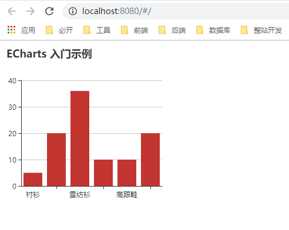
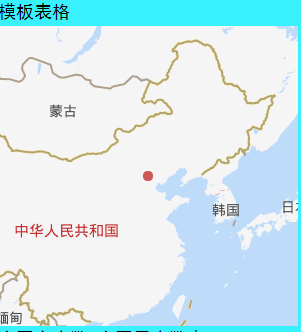

ECharts + Vue 折腾记
Create by jsliang on 2018-11-28 11:01:39
Recently revised in 2019-05-31 16:30:08
Hello 小伙伴们，如果觉得本文还不错，记得点个赞或者给个 star，你们的赞和 star 是我编写更多更精彩文章的动力！GitHub 地址
技术官网就是躺坑的地儿！
翻遍百度文，一把辛酸泪~
整合网上的 Vue + ElementUI，Vue + ECharts，ECharts + 百度地图 API……的文章，带你走非一般的道路。
一 目录
不折腾的前端，和咸鱼有什么区别
| 目录 |
|---|
| 一 目录 |
| 二 前言 |
| 三 正文 |
| 3.1 Vue |
| 3.2 Echarts |
| 3.3 ElementUI |
| 3.4 百度地图 |
| 四 精细入微 |
| 4.1 百度地图调整 |
| 4.2 样式问题集 |
二 前言
现在是大数据和云计算的时代，所以数据可视化逐渐变成一种趋势。
而 ECharts 对于制作的图表可以满足小伙伴们的创造力，它具备华丽的外衣，且实用。
在这里，jsliang 将通过 ECharts + Vue 进行折腾。
如果小伙伴们对 Vue 还不太熟，这里可能没法带你飞喔~
前置条件：Vue、Npm、Webpack
参考文献：
- ECharts Demo | ECharts 官网
- ElementUI | ElementUI 官网
- 在 vue-cli 项目中使用 echarts | 博客园 - 搞前端的李蚊子
- Vue：在 Vue 中使用 echarts | 简书 - Mr_Treasure
- 在 VUE 项目中使用 ECharts 画 K 线图和面积图 | CSDN - zgh0711
- 在 vue 中添加 Echarts 图表使用详解 | PHP 中文网 - 小云云
- v-charts | 饿了么
- vue-echarts | npm
- 在 vue 中，应该直接使用 echarts 还是 vue-echarts | Vue 论坛 - JasonBai007
- 在 vue 项目中引入高德地图及其 UI 组件 | CSDN - shuaizi96
- vue 引入高德地图 echarts
- 百度地图引用报错 A parser-blocking, cross site (i.e. different eTLD+1) script | CSDN - 雨中畅游
- vue 引入公共css文件 | CSDN - Smartsunsing
- 调用百度地图api 去掉地图左下角LOGO或文字 | CSDN - 陈小黏
- Echarts数据可视化系列文章 | CSDN - 数据架构师
- 几种css炫酷背景欣赏 | CSDN - 小圣贤君
三 正文
Now, let's go~
如果你觉得自己的 npm 下载速度过慢，请使用 cnpm：
- 安装：
npm install -g cnpm --registry=https://registry.npm.taobao.org - 使用：
cnpm i 插件 -g
3.1 Vue
Vue 参考文档：
步骤：
- 安装
vue-cli：npm i vue-cli -g - 初始化 Vue 项目：
vue init webpack - 开启开发模式：
npm run dev - 打开浏览器，查看网页：
http://localhost:8080
3.2 Echarts
首先，我们在项目中安装 ECharts 依赖：
npm i echarts -S
然后，你可以选择按需引用还是全局引用：
- 全局引用
ECharts 初始化应在钩子函数 mounted() 中，这个钩子函数是在 el 被新创建的 vm.$el 替换，并挂载到实例上去之后调用。
项目/src/main.js
import Vue from 'vue'
import App from './App'
import router from './router'
// 引入echarts
import echarts from 'echarts'
Vue.prototype.$echarts = echarts
Vue.config.productionTip = false
new Vue({
el: '#app',
router,
components: { App },
template: '<App/>'
})
项目/src/components/HelloWorld.vue
<template>
<div>
<div id="myChart" :style="{width: '300px', height: '300px'}"></div>
</div>
</template>
<script>
export default {
name: 'hello',
data () {
return {
msg: 'Welcome to Your Vue.js App'
}
},
mounted(){
this.drawLine();
},
methods: {
drawLine(){
// 基于准备好的dom，初始化echarts实例
let myChart = this.$echarts.init(document.getElementById('myChart'))
// 绘制图表
myChart.setOption({
title: { text: '在Vue中使用echarts' },
tooltip: {},
xAxis: {
data: ["衬衫","羊毛衫","雪纺衫","裤子","高跟鞋","袜子"]
},
yAxis: {},
series: [{
name: '销量',
type: 'bar',
data: [5, 20, 36, 10, 10, 20]
}]
});
}
}
}
</script>
<style scoped>
</style>
- 按需引用
如果我们使用全局引用。将 ECharts 图表打包，会导致体积过大，所以项目中最好按需引入。
在这里我们使用 requrie 引用而不是 import，因为 import 必须写全路径，比较麻烦。
项目/src/components/HelloWorld.vue
<template>
<div>
<div id="myChart" :style="{width: '300px', height: '300px'}"></div>
</div>
</template>
<script>
// 引入基本模板
let echarts = require("echarts/lib/echarts");
// 引入柱状图组件
require("echarts/lib/chart/bar");
// 引入提示框和title组件
require("echarts/lib/component/tooltip");
require("echarts/lib/component/title");
export default {
name: 'hello',
data() {
return {
msg: 'Welcome to Your Vue.js App'
}
},
mounted() {
this.drawLine();
},
methods: {
drawLine() {
// 基于准备好的dom，初始化echarts实例
let myChart = echarts.init(document.getElementById('myChart'))
// 绘制图表
myChart.setOption({
title: { text: 'ECharts 入门示例' },
tooltip: {},
xAxis: {
data: ["衬衫", "羊毛衫", "雪纺衫", "裤子", "高跟鞋", "袜子"]
},
yAxis: {},
series: [{
name: '销量',
type: 'bar',
data: [5, 20, 36, 10, 10, 20]
}]
});
}
}
};
</script>
<style scoped>
</style>
最后，我们只需要 npm run dev 启动项目，打开 localhost:8080 即可。

3.3 ElementUI
考虑到项目没有 UI 设计稿。那么，就需要引用一款 Vue 的 UI 框架了，偷懒用 ElementUI 吧。
然后，为了使项目尽可能小巧，jsliang 打算按需引入 ElementUI：
步骤 1. 安装 ElementUI：npm i element-ui -S
步骤 2. 安装 babel-plugin-component：npm i babel-plugin-component -D
步骤 3. 修改 .babelrc：
.babelrc
{
"presets": [
["env", {
"modules": false,
"targets": {
"browsers": ["> 1%", "last 2 versions", "not ie <= 8"]
}
}],
"stage-2"
],
"plugins": [
"transform-vue-jsx",
"transform-runtime",
[
"component",
{
"libraryName": "element-ui",
"styleLibraryName": "theme-chalk"
}
]
]
}
步骤 4. 按需引入 Row 与 Col：
main.js
import Vue from 'vue'
import App from './App'
import router from './router'
Vue.config.productionTip = false
import {Row, Col} from 'element-ui';
Vue.use(Row).use(Col);
new Vue({
el: '#app',
router,
components: { App },
template: '<App/>'
})
这样，就可以在项目中使用这两个组件了。
3.4 百度地图
引用百度地图很简单，但是结合 Vue + ECharts 来使用百度地图，很难。现在我们过一遍如何使用：
步骤 1. 引用百度地图：
项目/index.html
<!DOCTYPE html>
<html>
<head>
<meta charset="utf-8">
<meta name="viewport" content="width=device-width,initial-scale=1.0">
<title>ECharts 图表</title>
<script type="text/javascript" src="http://api.map.baidu.com/getscript?v=3.0&ak=Xjmh9v5jGa******6ZVf0PU2ueSedr5F"></script>
</head>
<body>
<div id="app"></div>
</body>
</html>
注意：srcipt 引用的链接，需要你去百度地图 API 那里获得，因为 ak 对应的是个人的 API 地址，这里不可能泄露给你的。百度地图 API
步骤 2. 在组件中使用它：
<template>
<div class="temp">
<p>模板表格</p>
<div id="temp-chart" class="temp-chart"></div>
</div>
</template>
<script>
// 注意在 index.html 引入全局的百度地图 JS
// script src=""http://api.map.baidu.com/getscript?v=3.0&ak=Xjmh9v5jGa******6ZVf0PU2ueSedr5F"
// 引入基本模板
let echarts = require("echarts/lib/echarts");
// 引入百度扩展
require("echarts/extension/bmap/bmap");
export default {
name: "temp",
data() {
return {};
},
mounted() {
this.drawTempMap();
},
methods: {
drawTempMap() {
// 基于准备好的dom，初始化echarts实例
let myChart = echarts.init(document.getElementById("temp-chart"));
// 创建地图实例
var map = new BMap.Map("temp-chart");
// 绘制图表
myChart.setOption({
// 加载 bmap 组件
bmap: {
// 百度地图中心经纬度
center: [116.46, 39.92],
// 百度地图缩放
zoom: 4,
// 是否开启拖拽缩放，可以只设置 'scale' 或者 'move'
roam: true,
// 百度地图的自定义样式，见 http://developer.baidu.com/map/jsdevelop-11.htm
mapStyle: {}
},
series: [
{
type: "scatter",
// 使用百度地图坐标系
coordinateSystem: "bmap",
// 数据格式跟在 geo 坐标系上一样，每一项都是 [经度，纬度，数值大小，其它维度...]
data: [
[116.46, 39.92, 1]
]
}
]
});
}
}
};
</script>
<style scoped>
.temp-chart {
width: 300px;
height: 300px;
}
</style>

这样，我们就可以在我们的 ECharts 畅通无阻地使用百度地图了。
四 精细入微
有时候，一些小细节总会困惑你。
在这里，jsliang 将贴出自己解决的小细节。
结合 Ctrl + F 搜索关键字喔~
4.1 百度地图调整
- 问：为什么开发的时候控制台报
warning？
api?v=3.0&ak=Xjmh9v5jGa*****6ZVf0PU2ueSedr5F:1
A parser-blocking,
cross site (i.e. different eTLD+1) script,
http://api.map.baidu.com/getscript?
- 答：
这时候你的引用地址应该是：
<script type="text/javascript" src="http://api.map.baidu.com/api?v=3.0&ak=Xjmh9v5jGa******6ZVf0PU2ueSedr5F"></script>
你只需要将 api 改成 getscript 即可解决它的 warning 警告：
<script type="text/javascript" src="http://api.map.baidu.com/getscript?v=3.0&ak=Xjmh9v5jGa******6ZVf0PU2ueSedr5F"></script>
问：如何去除百度地图左下角的信息（logo 和 文字）？
答：
你只需要在全局样式里写上下面这段话就可以屏蔽它：
App.vue
<style>
.BMap_cpyCtrl, .BMap_noprint, .anchorBL {
display: none !important;
}
</style>
4.2 样式问题集
问：为什么 Chrome 上的
body会有8px的margin值？或者img不贴边之类的。答：
这是浏览器自带的样式喔，去掉方式：
首先，在项目的 static 目录上，新建 css 文件夹，然后新建 reset.css，内容如下所示：
项目/static/css/reset.css
/*
* reset 的目的不是让默认样式在所有浏览器下一致，而是减少默认样式有可能带来的问题。
* The purpose of reset is not to allow default styles to be consistent across all browsers, but to reduce the potential problems of default styles.
* create by jsliang
*/
/** 清除内外边距 - clearance of inner and outer margins **/
body, h1, h2, h3, h4, h5, h6, hr, p, blockquote, /* 结构元素 - structural elements */
dl, dt, dd, ul, ol, li, /* 列表元素 - list elements */
pre, /* 文本格式元素 - text formatting elements */
form, fieldset, legend, button, input, textarea, /* 表单元素 - from elements */
th, td /* 表格元素 - table elements */ {
margin: 0;
padding: 0;
}
/** 设置默认字体 - setting the default font **/
body, button, input, select, textarea {
font: 18px/1.5 '黑体', Helvetica, sans-serif;
}
h1, h2, h3, h4, h5, h6, button, input, select, textarea { font-size: 100%; }
/** 重置列表元素 - reset the list element **/
ul, ol { list-style: none; }
/** 重置文本格式元素 - reset the text format element **/
a, a:hover { text-decoration: none; }
/** 重置表单元素 - reset the form element **/
button { cursor: pointer; }
input { font-size: 18px; outline: none; }
/** 重置表格元素 - reset the table element **/
table { border-collapse: collapse; border-spacing: 0; }
/** 图片自适应 - image responsize **/
img { border: 0; display: inline-block; width: 100%; max-width: 100%; height: auto; vertical-align: middle; }
/*
* 默认box-sizing是content-box，该属性导致padding会撑大div，使用border-box可以解决该问题
* set border-box for box-sizing when you use div, it solve the problem when you add padding and don't want to make the div width bigger
*/
div, input { box-sizing: border-box; }
/** 清除浮动 - clear float **/
.jsliang-clear:after, .clear:after {
content: '\20';
display: block;
height: 0;
clear: both;
}
.jsliang-clear, .clear {
*zoom: 1;
}
/** 设置input的placeholder - set input placeholder **/
input::-webkit-input-placeholder { color: #919191; font-size: .26rem } /* Webkit browsers */
input::-moz-placeholder { color: #919191; font-size: .26rem } /* Mozilla Firefox */
input::-ms-input-placeholder { color: #919191; font-size: .26rem } /* Internet Explorer */
然后，在项目目录的 src 目录下的 main.js 文件中添加下面的语句，就可以引用 css 样式，清空浏览器的内置了：
项目/src/main.js
import '../static/css/reset.css' /**引入样式重置 */
Hello 小伙伴们，如果觉得本文还不错，记得点个赞或者给个 star，你们的赞和 star 是我编写更多更精彩文章的动力！GitHub 地址
jsliang 广告推送：
也许小伙伴想了解下云服务器
或者小伙伴想买一台云服务器
或者小伙伴需要续费云服务器
欢迎点击 云服务器推广 查看！


jsliang 的文档库 由 梁峻荣 采用 知识共享 署名-非商业性使用-相同方式共享 4.0 国际 许可协议进行许可。
基于https://github.com/LiangJunrong/document-library上的作品创作。
本许可协议授权之外的使用权限可以从 https://creativecommons.org/licenses/by-nc-sa/2.5/cn/ 处获得。